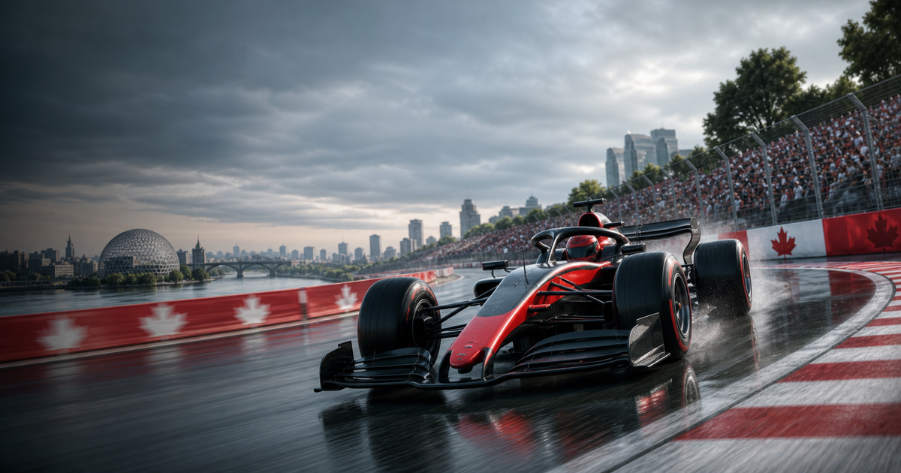
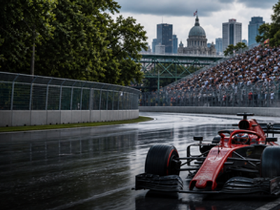

Formula 1 event guide
Canadian Grand Prix
A compact OneSliders guide to what the event is, how the current edition works and which stages matter most.

More Formula 1Interested in more Formula 1?Explore related events, places and calendar moments.
The Canadian Grand Prix has been part of the Formula 1 World Championship since 1967 and is best known today for Circuit Gilles Villeneuve in Montreal.
Formula 1 weekends are split into practice, qualifying and the Grand Prix. Sprint formats only apply when Formula 1 schedules them for that edition.
Both drivers have seven Canadian Grand Prix wins. Recent years have been dominated by Max Verstappen and Mercedes winners.
- Selected edition: 22 May - 24 May 2026.
- Venue: Circuit Gilles Villeneuve, Montreal.
| Year | Winner | Team |
|---|---|---|
| 2025 | George Russell | Mercedes |
| 2024 | Max Verstappen | Red Bull Racing |
| 2023 | Max Verstappen | Red Bull Racing |
| 2022 | Max Verstappen | Red Bull Racing |
| 2019 | Lewis Hamilton | Mercedes |
| 2018 | Sebastian Vettel | Ferrari |
| 2017 | Lewis Hamilton | Mercedes |
| 2016 | Lewis Hamilton | Mercedes |
| 2015 | Lewis Hamilton | Mercedes |
| 2014 | Daniel Ricciardo | Red Bull Racing |
Edition guide
Canadian Grand Prix 2026
Switch between recent editions without leaving the one-slider.
Countdown to the start of this edition.
Dates come from the OneSliders event index for this edition.
Ticket windows and resale rules can change.
The stages slide separates the event into planning-friendly parts.
Broadcast information is edition-specific.
The general event guide stays evergreen while this slide changes by edition.
Race weekend
Weekend sessions and race
Sprint-weekend sessions and race classification in two focused views.